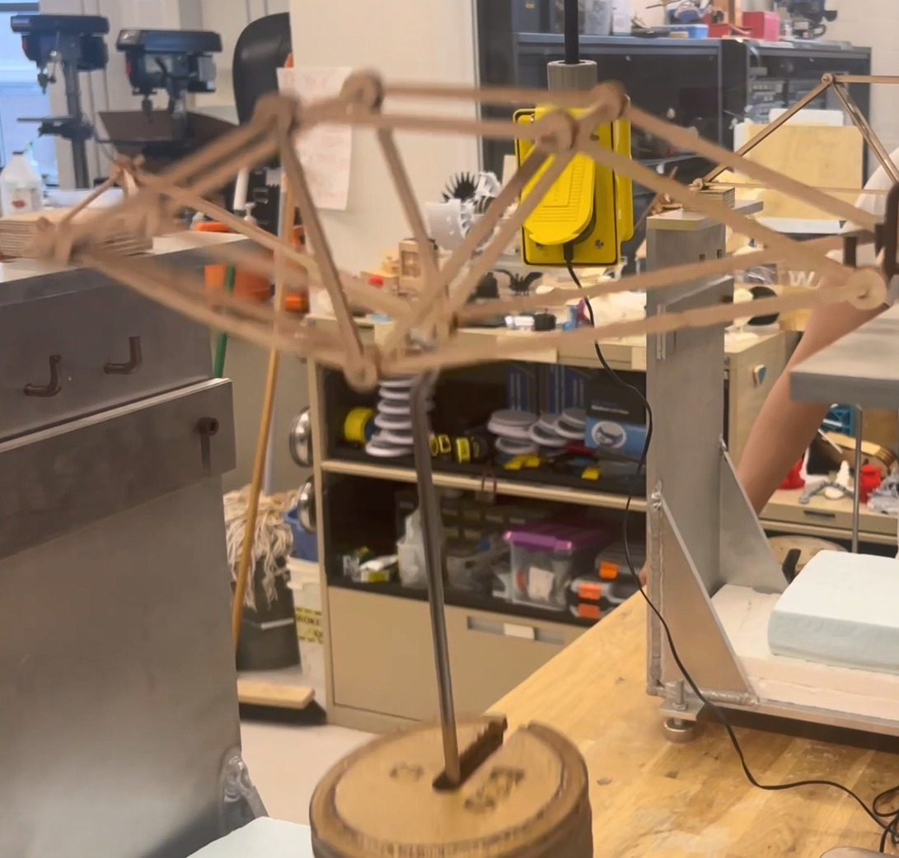
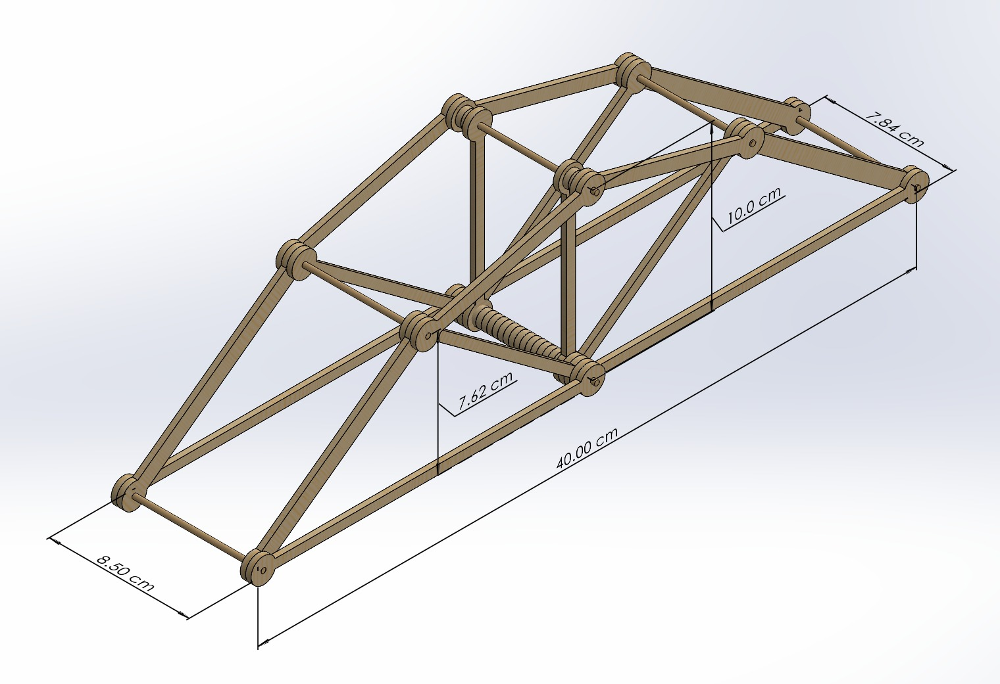
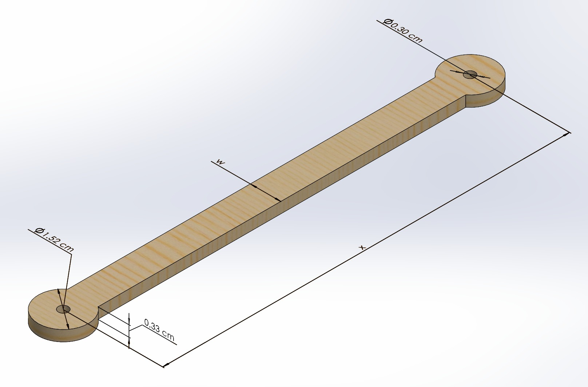
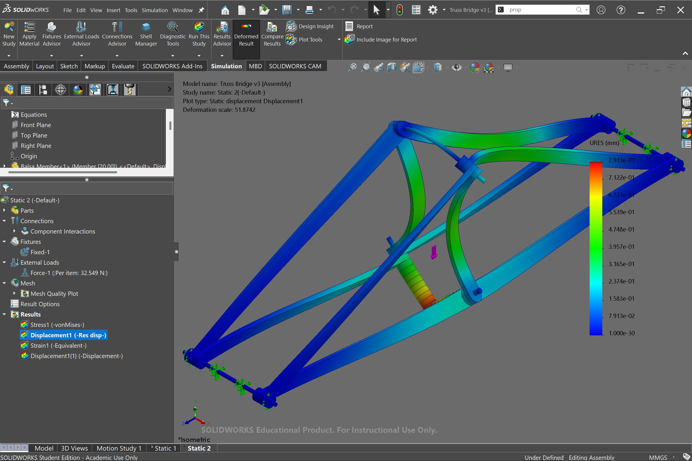
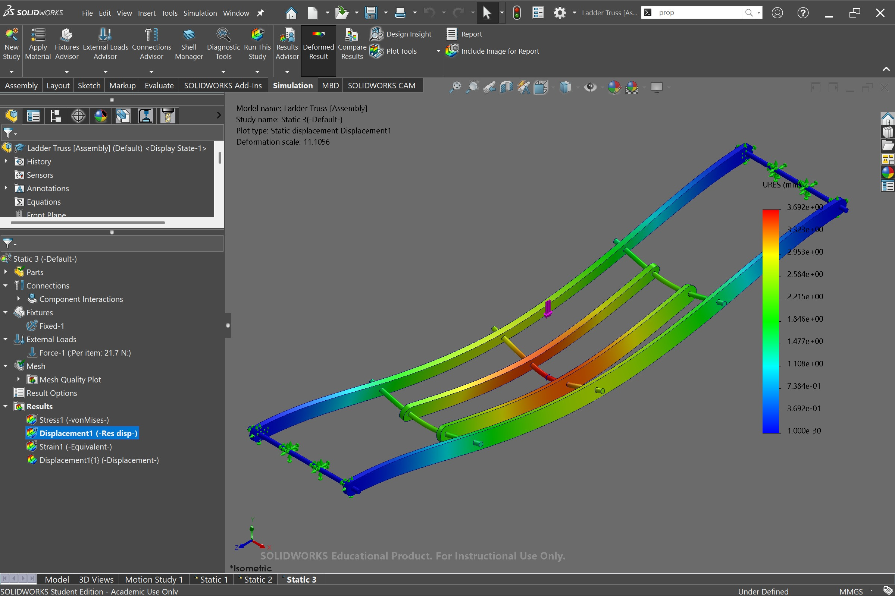
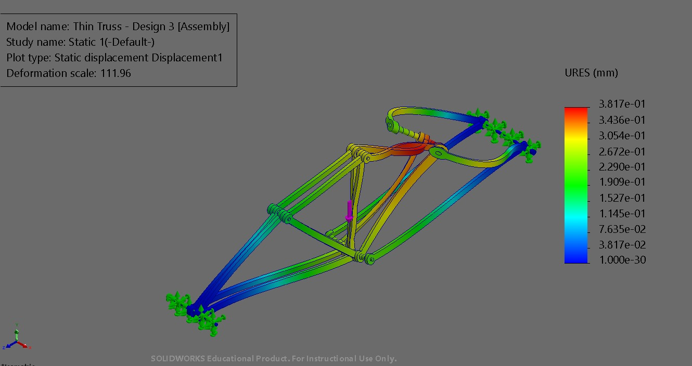

projects / 14
Balsa Wood Truss Bridge — Mechanics of Deformable Solids
Culminating structural design and optimization project for MTE 219: Mechanics of Deformable Solids at the University of Waterloo. Engineered an ultra-lightweight balsa wood truss bridge designed to maximize payload-to-weight structural efficiency under center-point loading. Combined analytical method-of-joints force calculations with SolidWorks FEA simulations using orthotropic balsa material properties to resolve axial tensions, compressions, and Euler buckling limits across each link.
- Analytical Truss Equilibrium: Resolved exact member force distributions (tension vs. compression) across 3D pin-connected nodes using the Method of Joints and Sections.
- SolidWorks FEA Simulation: Configured static displacement and stress finite element analyses under 32.5 N load with deformation scaling up to 112× to validate flexural stiffness.
- Buckling & Link Sizing: Tailored individual member cross-sections, reinforcing compressive top chords against out-of-plane buckling while optimizing tension diagonals.
- Destructive Physical Testing: Evaluated the assembled bridge on a laboratory load fixture with suspended deadweights, confirming high payload-to-mass performance.
Lab Testing · Destructive Center Load Fixture

SolidWorks CAD · Parametric 3D Truss Assembly

Physical Load Testing & 3D Assembly CAD — Experimental load testing on custom center-point fixture alongside the 40 cm parametric SolidWorks bridge assembly.
01Mechanical Design & Parametric Truss Geometry
- Modeled a 40.0 cm span, 10.0 cm tall Warren/Pratt hybrid truss in SolidWorks with lateral cross-bracing and transverse deck beams.
- Parametric individual link architecture: engineered eye ends with Ø0.30 cm pin holes and Ø1.52 cm outer margins to prevent joint tear-out shear.
- Calculated Method of Joints and Method of Sections force equilibriums to dictate cross-sectional thickness (0.33 cm) and member widths.
Full Bridge CAD · Dimensioned Isometric
Parametric Member CAD · Pin Joint Link

3D Truss Topology & Member Detailing — Complete assembly envelope dimensions (40 cm × 8.5 cm × 10 cm) and single-link parametric geometry.
02SolidWorks FEA Simulation & Structural Optimization
- Configured static displacement and stress finite element studies in SolidWorks Simulation applying 32.5 N test loads across central node fixtures.
- Evaluated resultant displacement heatmaps (URES contour) across design iterations with deformation scales up to 112× to identify flexure hot spots.
- Optimized compression top chords against Euler buckling while slimming pure tension diagonals to maximize strength-to-weight ratio.
FEA Study · Truss Bridge v3 Static Displacement

Full Assembly Static FEA Simulation — Resultant displacement plot under 32.5 N center point load (deformation scale 51.87×, peak deflection 0.79 mm).
Comparative Study · Ladder Truss

Comparative Study · Thin Truss v3

Structural Topology Iterations — Comparative finite element analyses evaluating Ladder Truss vs. Thin Truss Design 3 under simulated loads.
03Fabrication & Destructive Load Testing
- Precision fabricated structural balsa members with drilled pin joints to eliminate eccentricity and ensure uniform load sharing.
- Conducted destructive load test on laboratory fixture, supporting suspended deadweight stack to determine maximum payload.
- Correlated physical deflection against FEA simulation predictions, demonstrating high structural efficiency in MTE 219.
Laboratory Load Test · Center-Point Deadweight
Physical Failure & Deflection Testing — Physical bridge loaded on rigid upright supports with suspended deadweight stack to determine ultimate load capacity.